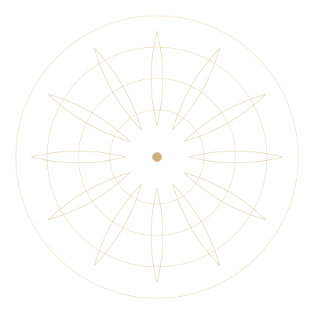

<!--
  HERO · PHOTO (light / editorial)
  ---------------------------------
  Used on: index, about, awards, spaces.
  Variants: centred (default) and left-aligned (home page hero).

  Replace the background-image URL with your real photo. Mandala SVG can
  be inlined or imported from ../assets/svg/mandala.svg.
-->
<style>
  .m-hero {
    position: relative;
    min-height: 80vh;
    overflow: hidden;
    background: #1a1510;
    color: #fdfcf9;
    padding: 140px 48px 120px;
    display: flex; align-items: center; justify-content: center;
    text-align: center;
    font-family: 'Manrope', system-ui, sans-serif;
  }
  .m-hero--left { justify-content: flex-start; text-align: left; }

  .m-hero__bg {
    position: absolute; inset: 0; z-index: 0;
    background-image: url("../assets/example-photo.jpg");
    background-size: cover;
    background-position: center 20%;
    animation: m-breathe 24s ease-in-out infinite alternate;
  }
  @keyframes m-breathe { 0% { transform: scale(1); } 100% { transform: scale(1.04); } }

  .m-hero__scrim {
    position: absolute; inset: 0; z-index: 1;
    background:
      linear-gradient(180deg, rgba(20, 16, 10, 0.55) 0%, rgba(20, 16, 10, 0.35) 40%, rgba(20, 16, 10, 0.75) 100%),
      radial-gradient(ellipse at center, transparent 30%, rgba(20, 16, 10, 0.4) 100%);
  }

  .m-hero__mandala {
    position: absolute; top: 50%; left: 50%;
    transform: translate(-50%, -50%);
    width: 540px; height: 540px;
    z-index: 1; opacity: 0.18; pointer-events: none;
    animation: m-rotate 240s linear infinite;
  }
  .m-hero--left .m-hero__mandala { left: 18%; }
  @keyframes m-rotate {
    from { transform: translate(-50%, -50%) rotate(0); }
    to   { transform: translate(-50%, -50%) rotate(360deg); }
  }

  .m-hero__halo {
    position: absolute; top: 50%; left: 50%;
    transform: translate(-50%, -50%);
    width: 720px; height: 720px;
    z-index: 1; pointer-events: none;
    background: radial-gradient(circle, rgba(212, 174, 107, 0.18) 0%, transparent 55%);
    animation: m-halo 6s ease-in-out infinite alternate;
  }
  @keyframes m-halo { 0% { opacity: 0.5; } 100% { opacity: 1; } }

  .m-hero__inner {
    position: relative; z-index: 2;
    max-width: 880px;
  }
  .m-hero--left .m-hero__inner { max-width: 560px; }

  .m-hero__kicker {
    font-size: 12px; letter-spacing: 0.42em; text-transform: uppercase;
    color: #d4ae6b; font-weight: 500;
    margin-bottom: 44px;
    display: inline-flex; align-items: center; gap: 16px;
  }
  .m-hero__kicker::before, .m-hero__kicker::after {
    content: ""; width: 48px; height: 1px; background: #d4ae6b;
  }
  .m-hero--left .m-hero__kicker::after { display: none; }

  .m-hero__title {
    font-family: 'Cormorant Garamond', Georgia, serif;
    font-size: clamp(58px, 7vw, 118px);
    font-weight: 300; line-height: 0.96; letter-spacing: -0.024em;
    margin-bottom: 36px;
    text-shadow: 0 4px 40px rgba(0, 0, 0, 0.5);
  }
  .m-hero__title em { font-style: italic; color: #d4ae6b; }

  .m-hero__lede {
    font-family: 'Cormorant Garamond', Georgia, serif;
    font-size: clamp(19px, 1.6vw, 24px);
    font-style: italic;
    color: rgba(253, 252, 249, 0.88);
    line-height: 1.55; max-width: 620px;
    margin: 0 auto 48px;
  }
  .m-hero--left .m-hero__lede { margin-left: 0; max-width: 520px; }

  .m-hero__ctas {
    display: flex; gap: 14px; flex-wrap: wrap;
    justify-content: center;
  }
  .m-hero--left .m-hero__ctas { justify-content: flex-start; }
  .m-btn {
    font-size: 12px; letter-spacing: 0.24em; text-transform: uppercase;
    padding: 18px 38px;
    border: 1px solid #d4ae6b; font-weight: 500;
    transition: all 0.35s; cursor: pointer;
    display: inline-flex; align-items: center; gap: 12px;
  }
  .m-btn--primary { background: #b8924a; color: #fdfcf9; border-color: #b8924a; }
  .m-btn--primary:hover { background: #8a6a2f; transform: translateY(-2px); }
  .m-btn--ghost {
    background: rgba(0, 0, 0, 0.3); color: #fdfcf9;
    backdrop-filter: blur(6px);
  }
  .m-btn--ghost:hover { background: rgba(212, 174, 107, 0.2); border-color: #b8924a; }
</style>

<section class="m-hero">
  <div class="m-hero__bg"></div>
  <div class="m-hero__scrim"></div>

  <!-- Inline the mandala SVG, or replace this img with: -->
  <!--  -->
  <svg class="m-hero__mandala" viewBox="0 0 400 400" aria-hidden="true">
    <g fill="none" stroke="#d4ae6b" stroke-width="0.5" opacity="0.6">
      <circle cx="200" cy="200" r="180"/>
      <circle cx="200" cy="200" r="140"/>
      <circle cx="200" cy="200" r="100"/>
    </g>
    <circle cx="200" cy="200" r="6" fill="#b8924a" opacity="0.7"/>
  </svg>
  <div class="m-hero__halo"></div>

  <div class="m-hero__inner">
    <div class="m-hero__kicker">A life in service</div>
    <h1 class="m-hero__title">In stillness,<br/><em>everything answers.</em></h1>
    <p class="m-hero__lede">A spiritual master, humanitarian, and silent presence — walking with seekers across ninety countries.</p>
    <div class="m-hero__ctas">
      <a href="#" class="m-btn m-btn--primary">Begin →</a>
      <a href="#" class="m-btn m-btn--ghost">Mohanji's words</a>
    </div>
  </div>
</section>
